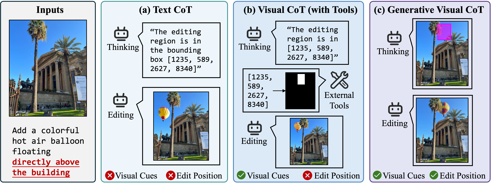
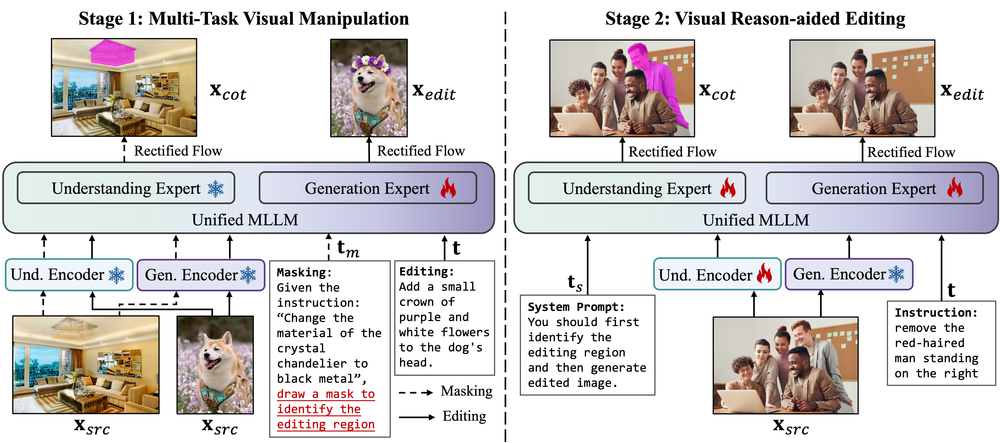
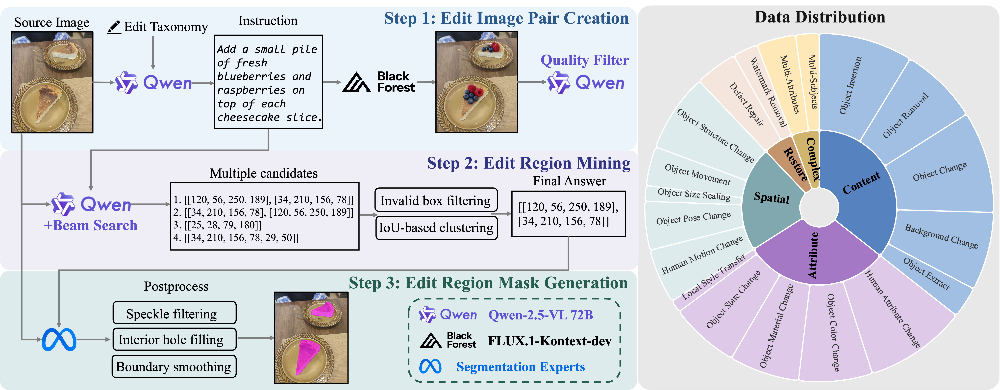

Generative Visual Chain-of-Thought (GVCoT). A comparison of three reasoning paradigms: (a) Text CoT, which reasons purely within the text space; (b) Visual CoT (with Tools), which leverages external tools to highlight target regions; and (c) Our GVCoT, which performs native visual reasoning via a generative diffusion process within a unified space.
Existing image editing methods struggle to perceive where to edit, especially under complex scenes and nuanced spatial instructions. To address this issue, we propose Generative Visual Chain-of-Thought (GVCoT), a unified framework that performs native visual reasoning by first generating spatial cues to localize the target region and then executing the edit. Unlike prior text-only CoT or tool-dependent visual CoT paradigms, GVCoT jointly optimizes visual tokens generated during the reasoning and editing phases in an end-to-end manner. This way fosters the emergence of innate spatial reasoning ability and enables more effective utilization of visual-domain cues. The main challenge of training GCVoT lies in the scarcity of large-scale editing data with precise edit region annotations; to this end, we construct GVCoT-Edit-Instruct, a dataset of 1.8M high-quality samples spanning 19 tasks. We adopt a progressive training strategy: supervised fine-tuning to build foundational localization ability in reasoning trace before final editing, followed by reinforcement learning to further improve reasoning and editing quality. Finally, we introduce SREdit-Bench, a new benchmark designed to comprehensively stress-test models under sophisticated scenes and fine-grained referring expressions. Experiments demonstrate that GVCoT consistently outperforms state-of-the-art models on SREdit-Bench and ImgEdit.
GVCoT is a novel framework that enables a unified model to generate visual spatial cues as intermediate reasoning steps during image editing. Specifically, the process begins by identifying the editing region by drawing masks onto the input image, which corresponds to the visual thought, followed by the image editing step. By directly supervising the visual tokens generated during the reasoning process with a diffusion loss, GVCoT integrates reasoning and editing into a unified end-to-end learning framework, thereby facilitating a more stable and effective emergence of intrinsic visual reasoning ability.
We adopt a progressive training recipe that combines supervised fine-tuning (SFT) and reinforcement learning (RL). The first phase focuses on equipping the model with foundational capabilities of drawing masks onto original images and producing structured visual reasoning chains before the image editing process. The second phase boosts both intermediate localization accuracy and final editing fidelity using Group Relative Policy Optimization (GRPO).

Supervised Fine-Tuning training recipe. Stage 1: Multi-Task Visual Manipulation, where the model's generation expert is trained in a multi-task setup to inject the newly masking skill. Stage 2: Visual Reason-aided Editing, where the entire model is trained to generate a faithful and interpretable visual reasoning image and then an edited image within a single sequence.
To overcome the scarcity of image editing datasets with accurate edit region annotations, we develop a scalable multi-stage pipeline that automatically generates high-quality bounding boxes and segmentation masks for edited regions across diverse editing tasks. We utilize this pipeline to construct GVCoT-Edit-Instruct, a large-scale dataset containing 1.8 million high-quality training samples spanning 19 tasks.

The pipeline consists of three main steps: Edit Image Pair Creation, where we begin by constructing the source images, instructions, and edited images; Edit Region Mining, where Qwen2.5-VL predicts bounding box coordinates for the intended edit regions; and Edit Region Mask Generation, where we generate a precise mask for each mined edit region.
Existing benchmarks under-represent spatially complex editing scenarios, such as multiple similar editable entities, non-object-salient scenes, and tasks demanding fine-grained object referral. To fill this gap, we introduce SREdit-Bench, a new benchmark comprising 590 carefully curated samples focused on evaluating models' true spatial reasoning ability under complex editing scenarios.

Illustration of the SREdit-Bench. Left: We provide challenging scenarios featuring complex scenes and fine-grained referring expressions, including spatial-based, property-based, and knowledge-based instructions. Right: SREdit-Bench concentrates on more sophisticated scenes with higher object counts compared to existing benchmarks. We use GPT-4.1 as an automated judge to evaluate Semantic Consistency (SC) and Perceptual Quality (PQ).

Qualitative comparison in SREdit-Bench. Our method demonstrates superior spatial reasoning and instruction adherence compared to existing open-source models, especially when handling complex, multi-object editing tasks.